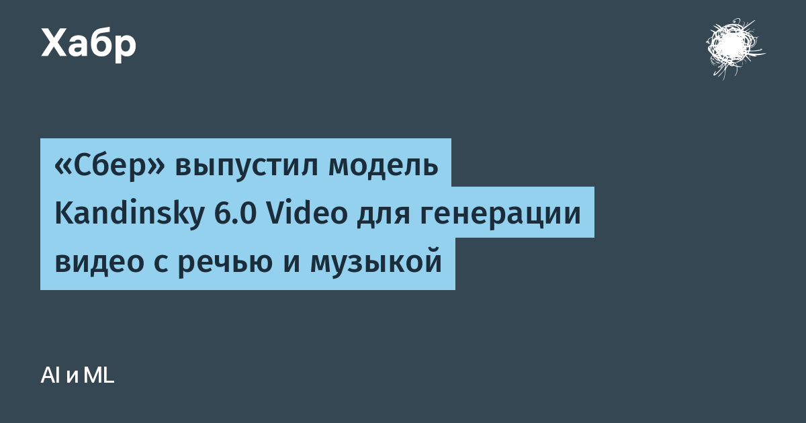

Kandinsky 6.0 Video генерирует ролик и звук одним проходом: движение губ попадает в произнесённые фразы, рядом звучат музыка и шумы окружения. Звуковая дорожка — с частотой дискретизации 44 кГц, при необходимости её можно отключить. На вход подаётся описание сцены обычным языком либо первый кадр с описанием того, что должно произойти; длительность пока ограничена пятью секундами, команда обещает её увеличить.
Семейство состоит из Lite на 3 млрд параметров и Pro — в официальной статье указан 29 млрд, в новостях цифру округляют до 30 млрд. В основе лежит двухпотоковая архитектура CrossDiT: видеопоток переехал по наследству от Kandinsky 5.0, аудиопоток обучали с нуля на больших аудиокорпусах, а согласует их двунаправленное перекрёстное внимание по времени и смыслу. Разрешение 1920×1080 дотягивает отдельная модель Kandinsky 6.0 Video Super-Resolution — она поднимает исходные 864×480 до Full HD. В «ГигаЧате» на выбор три режима: SD, HD и Full HD.
Код, веса и интеграция с Diffusers опубликованы под лицензией MIT, есть ускоренные версии моделей и режим запуска на видеокарте с 16 ГБ памяти. По итогам парного сравнения людьми Pro-версия заметно обходит Kandinsky 5.0 Video Pro и выглядит конкурентно на фоне ведущих моделей генерации видео со звуком — сильнее всего разрыв в качестве речи. Здесь и главный фокус релиза: система сама подбирает референсы для незнакомых объектов и персонажей, появившихся уже после обучения.
Синхронный звук вместе с видео давно умеют флагманские закрытые модели, но наружу они веса не выкладывают. Kandinsky 6.0 Video — как раз та ветка, где открытые веса и инструкции по запуску идут вместе с анонсом, так что сравнивать её придётся не только с закрытыми сервисами, но и с другими открытыми видеомоделями.